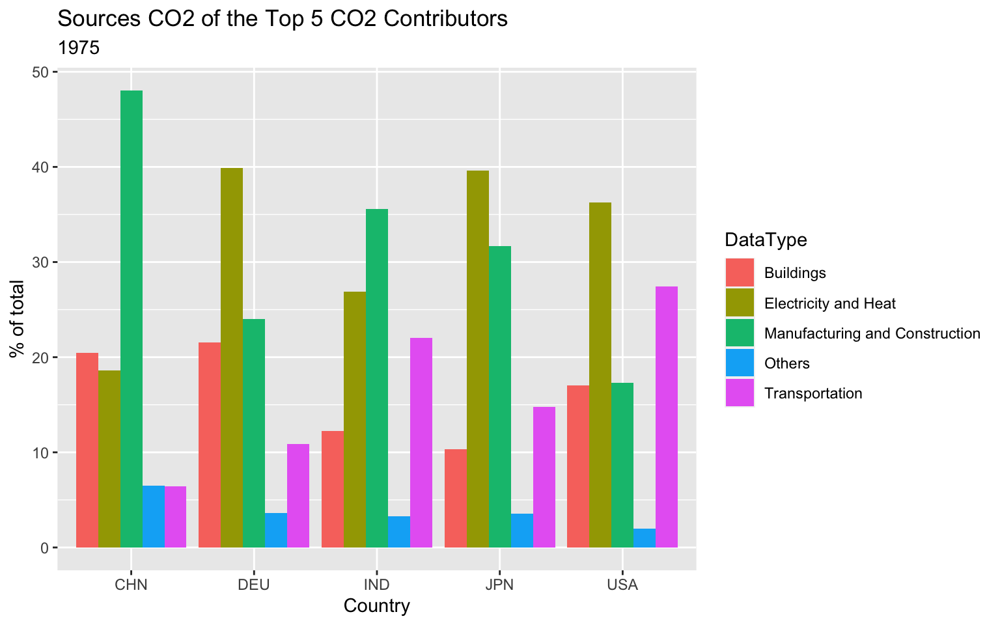
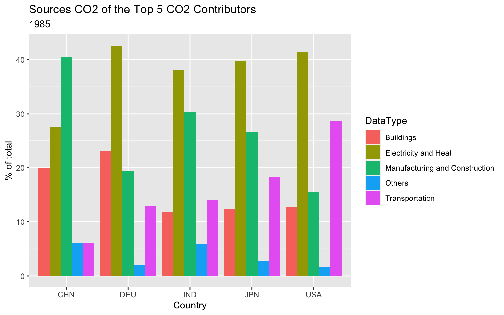
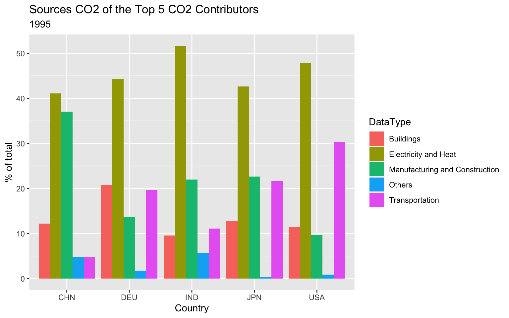
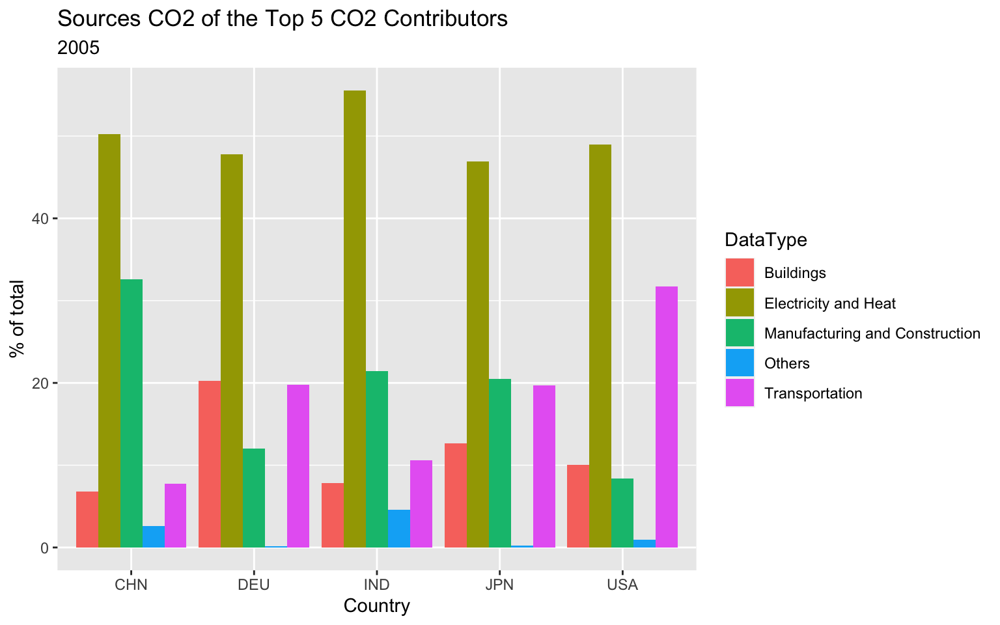
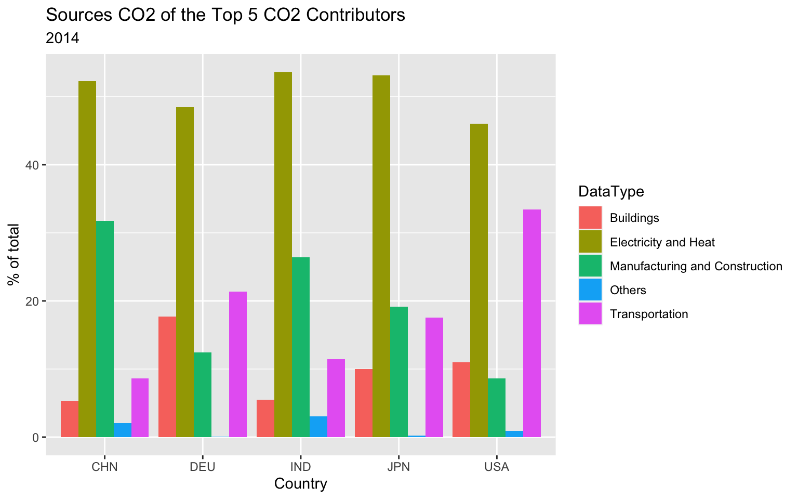
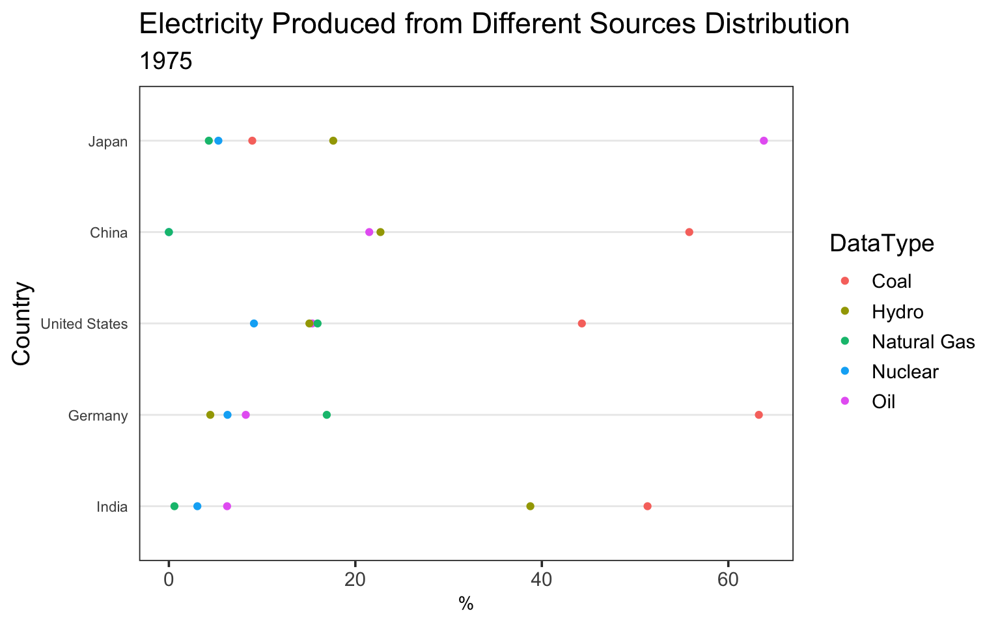
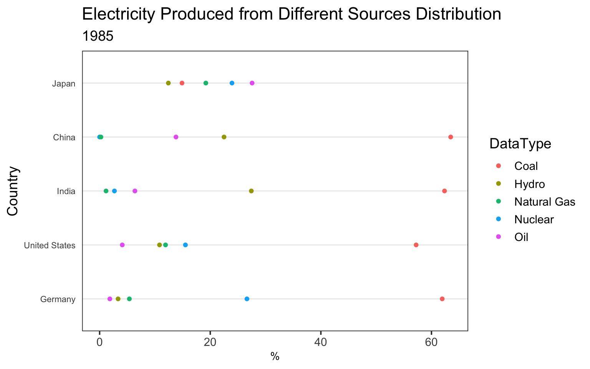
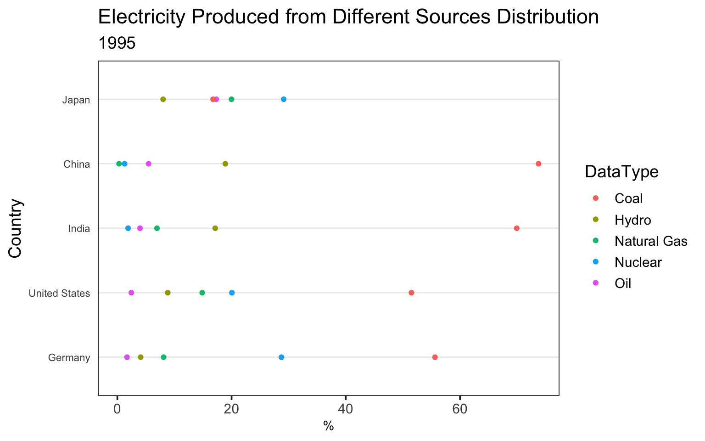
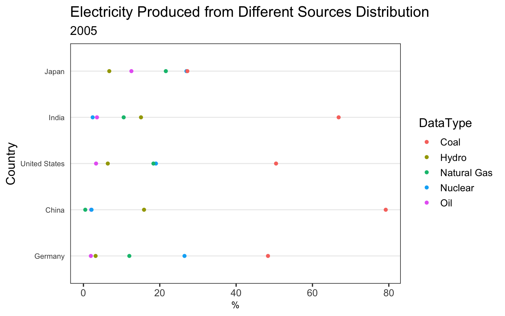
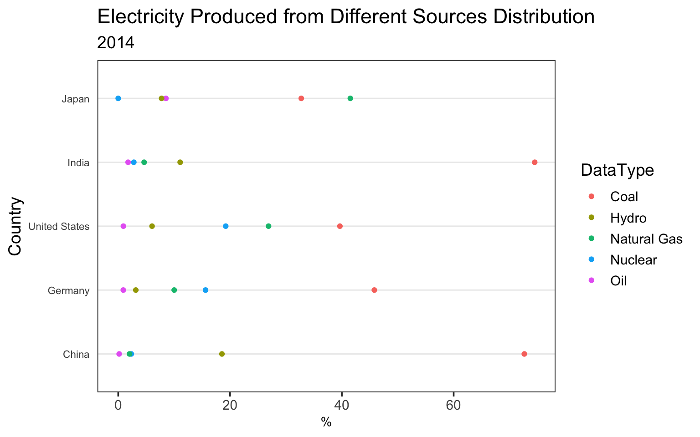

Chapter 6 Results
6.1 The following plot shows the top 20 countries with the highest GDP and their CO2 emission over the years in a moving plot
 * We can see that until late 1980s and early 1990s the countries that emitted the largest amount of CO2 are heavily industrialized countries in Europe and Americas (USA and Russia).
* As the countries in Asia (China and India) with large populations started to industrialize in the 1990s their CO2 emissions steadily increased.
* China and India overtook Russia by early and mid 2000s respectively and China became the largest emitter of CO2 overtaking the United States in 2005.
* The above plot was originally done as a moving plot using plotly; however, it cannot render to HTML. The code for the interactive plotly graph in the function but the plot is not displayed.
* We can see that until late 1980s and early 1990s the countries that emitted the largest amount of CO2 are heavily industrialized countries in Europe and Americas (USA and Russia).
* As the countries in Asia (China and India) with large populations started to industrialize in the 1990s their CO2 emissions steadily increased.
* China and India overtook Russia by early and mid 2000s respectively and China became the largest emitter of CO2 overtaking the United States in 2005.
* The above plot was originally done as a moving plot using plotly; however, it cannot render to HTML. The code for the interactive plotly graph in the function but the plot is not displayed.
6.2 The following graphs shows some distribution of possible producers of CO2 over different years 1975,1985,1995,2005,2014
## [1] "EN.CO2.TRAN.ZS"
## [1] "Transportation"
## [1] "EN.CO2.MANF.ZS"
## [1] "Manufacturing and Construction"
## [1] "EN.CO2.ETOT.ZS"
## [1] "Electricity and Heat"
## [1] "EN.CO2.BLDG.ZS"
## [1] "Buildings"
## [1] "EN.CO2.OTHX.ZS"
## [1] "Others"## series_id country_code country_name year value DataType
## 1 EN.CO2.TRAN.ZS USA United States 2014 33.397988 Transportation
## 2 EN.CO2.TRAN.ZS USA United States 2013 33.082966 Transportation
## 3 EN.CO2.TRAN.ZS USA United States 2012 33.625441 Transportation
## 4 EN.CO2.TRAN.ZS USA United States 2011 31.746010 Transportation
## 5 EN.CO2.TRAN.ZS USA United States 2010 31.332604 Transportation
## 6 EN.CO2.TRAN.ZS USA United States 2009 31.687719 Transportation
## 7 EN.CO2.TRAN.ZS USA United States 2008 30.990525 Transportation
## 8 EN.CO2.TRAN.ZS USA United States 2007 31.765819 Transportation
## 9 EN.CO2.TRAN.ZS USA United States 2006 32.237051 Transportation
## 10 EN.CO2.TRAN.ZS USA United States 2005 31.698254 Transportation
## 11 EN.CO2.TRAN.ZS USA United States 2004 31.443968 Transportation
## 12 EN.CO2.TRAN.ZS USA United States 2003 31.493132 Transportation
## 13 EN.CO2.TRAN.ZS USA United States 2002 31.457861 Transportation
## 14 EN.CO2.TRAN.ZS USA United States 2001 30.683623 Transportation
## 15 EN.CO2.TRAN.ZS USA United States 2000 30.440893 Transportation
## 16 EN.CO2.TRAN.ZS USA United States 1999 31.002177 Transportation
## 17 EN.CO2.TRAN.ZS USA United States 1998 30.290047 Transportation
## 18 EN.CO2.TRAN.ZS USA United States 1997 29.685132 Transportation
## 19 EN.CO2.TRAN.ZS USA United States 1996 30.154997 Transportation
## 20 EN.CO2.TRAN.ZS USA United States 1995 30.308603 Transportation
## 21 EN.CO2.TRAN.ZS USA United States 1994 29.994705 Transportation
## 22 EN.CO2.TRAN.ZS USA United States 1993 29.362671 Transportation
## 23 EN.CO2.TRAN.ZS USA United States 1992 29.574538 Transportation
## 24 EN.CO2.TRAN.ZS USA United States 1991 29.370744 Transportation
## 25 EN.CO2.TRAN.ZS USA United States 1990 29.711085 Transportation
## 26 EN.CO2.TRAN.ZS USA United States 1989 29.231726 Transportation
## 27 EN.CO2.TRAN.ZS USA United States 1988 29.369615 Transportation
## 28 EN.CO2.TRAN.ZS USA United States 1987 29.340984 Transportation
## 29 EN.CO2.TRAN.ZS USA United States 1986 29.367963 Transportation
## 30 EN.CO2.TRAN.ZS USA United States 1985 28.634919 Transportation
## 31 EN.CO2.TRAN.ZS USA United States 1984 28.576334 Transportation
## 32 EN.CO2.TRAN.ZS USA United States 1983 28.964780 Transportation
## 33 EN.CO2.TRAN.ZS USA United States 1982 28.410332 Transportation
## 34 EN.CO2.TRAN.ZS USA United States 1981 27.261858 Transportation
## 35 EN.CO2.TRAN.ZS USA United States 1980 27.011293 Transportation
## 36 EN.CO2.TRAN.ZS USA United States 1979 27.154719 Transportation
## 37 EN.CO2.TRAN.ZS USA United States 1978 27.905412 Transportation
## 38 EN.CO2.TRAN.ZS USA United States 1977 26.881169 Transportation
## 39 EN.CO2.TRAN.ZS USA United States 1976 27.004619 Transportation
## 40 EN.CO2.TRAN.ZS USA United States 1975 27.402944 Transportation
## 41 EN.CO2.TRAN.ZS USA United States 1974 25.959079 Transportation
## 42 EN.CO2.TRAN.ZS USA United States 1973 25.722114 Transportation
## 43 EN.CO2.TRAN.ZS USA United States 1972 25.503038 Transportation
## 44 EN.CO2.TRAN.ZS USA United States 1971 25.339487 Transportation
## 45 EN.CO2.TRAN.ZS USA United States 1970 24.589284 Transportation
## 46 EN.CO2.TRAN.ZS USA United States 1969 24.432225 Transportation
## 47 EN.CO2.TRAN.ZS USA United States 1968 24.163023 Transportation
## 48 EN.CO2.TRAN.ZS USA United States 1967 23.598202 Transportation
## 49 EN.CO2.TRAN.ZS USA United States 1966 23.385218 Transportation
## 50 EN.CO2.TRAN.ZS USA United States 1965 23.560033 Transportation
## 51 EN.CO2.TRAN.ZS USA United States 1964 24.155953 Transportation
## 52 EN.CO2.TRAN.ZS USA United States 1963 24.081453 Transportation
## 53 EN.CO2.TRAN.ZS USA United States 1962 24.204247 Transportation
## 54 EN.CO2.TRAN.ZS USA United States 1961 24.103989 Transportation
## 55 EN.CO2.TRAN.ZS USA United States 1960 23.731404 Transportation
## 56 EN.CO2.TRAN.ZS CHN China 2014 8.598695 Transportation
## 57 EN.CO2.TRAN.ZS CHN China 2013 8.386128 Transportation
## 58 EN.CO2.TRAN.ZS CHN China 2012 8.099089 Transportation
## 59 EN.CO2.TRAN.ZS CHN China 2011 7.496869 Transportation
## 60 EN.CO2.TRAN.ZS CHN China 2010 7.543742 Transportation
## 61 EN.CO2.TRAN.ZS CHN China 2009 7.539342 Transportation
## 62 EN.CO2.TRAN.ZS CHN China 2008 7.872612 Transportation
## 63 EN.CO2.TRAN.ZS CHN China 2007 7.457135 Transportation
## 64 EN.CO2.TRAN.ZS CHN China 2006 7.610674 Transportation
## 65 EN.CO2.TRAN.ZS CHN China 2005 7.710210 Transportation
## 66 EN.CO2.TRAN.ZS CHN China 2004 8.197755 Transportation
## 67 EN.CO2.TRAN.ZS CHN China 2003 8.172491 Transportation
## 68 EN.CO2.TRAN.ZS CHN China 2002 8.364739 Transportation
## 69 EN.CO2.TRAN.ZS CHN China 2001 8.317452 Transportation
## 70 EN.CO2.TRAN.ZS CHN China 2000 8.538332 Transportation
## 71 EN.CO2.TRAN.ZS CHN China 1999 6.151119 Transportation
## 72 EN.CO2.TRAN.ZS CHN China 1998 5.386890 Transportation
## 73 EN.CO2.TRAN.ZS CHN China 1997 5.698755 Transportation
## 74 EN.CO2.TRAN.ZS CHN China 1996 6.569432 Transportation
## 75 EN.CO2.TRAN.ZS CHN China 1995 4.876900 Transportation
## 76 EN.CO2.TRAN.ZS CHN China 1994 5.044321 Transportation
## 77 EN.CO2.TRAN.ZS CHN China 1993 5.656879 Transportation
## 78 EN.CO2.TRAN.ZS CHN China 1992 5.491394 Transportation
## 79 EN.CO2.TRAN.ZS CHN China 1991 5.226893 Transportation
## 80 EN.CO2.TRAN.ZS CHN China 1990 5.155737 Transportation
## 81 EN.CO2.TRAN.ZS CHN China 1989 5.989969 Transportation
## 82 EN.CO2.TRAN.ZS CHN China 1988 5.970777 Transportation
## 83 EN.CO2.TRAN.ZS CHN China 1987 6.072014 Transportation
## 84 EN.CO2.TRAN.ZS CHN China 1986 6.213070 Transportation
## 85 EN.CO2.TRAN.ZS CHN China 1985 6.024519 Transportation
## 86 EN.CO2.TRAN.ZS CHN China 1984 5.880245 Transportation
## 87 EN.CO2.TRAN.ZS CHN China 1983 5.998815 Transportation
## 88 EN.CO2.TRAN.ZS CHN China 1982 5.943074 Transportation
## 89 EN.CO2.TRAN.ZS CHN China 1981 5.885995 Transportation
## 90 EN.CO2.TRAN.ZS CHN China 1980 5.795571 Transportation
## 91 EN.CO2.TRAN.ZS CHN China 1979 5.994385 Transportation
## 92 EN.CO2.TRAN.ZS CHN China 1978 5.877036 Transportation
## 93 EN.CO2.TRAN.ZS CHN China 1977 6.110250 Transportation
## 94 EN.CO2.TRAN.ZS CHN China 1976 6.244749 Transportation
## 95 EN.CO2.TRAN.ZS CHN China 1975 6.402472 Transportation
## 96 EN.CO2.TRAN.ZS CHN China 1974 6.673472 Transportation
## 97 EN.CO2.TRAN.ZS CHN China 1973 6.296433 Transportation
## 98 EN.CO2.TRAN.ZS CHN China 1972 6.028603 Transportation
## 99 EN.CO2.TRAN.ZS CHN China 1971 5.826935 Transportation
## 100 EN.CO2.TRAN.ZS JPN Japan 2014 17.536996 Transportation
## 101 EN.CO2.TRAN.ZS JPN Japan 2013 17.547983 Transportation
## 102 EN.CO2.TRAN.ZS JPN Japan 2012 17.916794 Transportation
## 103 EN.CO2.TRAN.ZS JPN Japan 2011 18.160450 Transportation
## 104 EN.CO2.TRAN.ZS JPN Japan 2010 19.264809 Transportation
## 105 EN.CO2.TRAN.ZS JPN Japan 2009 20.163405 Transportation
## 106 EN.CO2.TRAN.ZS JPN Japan 2008 19.389613 Transportation
## 107 EN.CO2.TRAN.ZS JPN Japan 2007 18.716223 Transportation
## 108 EN.CO2.TRAN.ZS JPN Japan 2006 19.676687 Transportation
## 109 EN.CO2.TRAN.ZS JPN Japan 2005 19.724541 Transportation
## 110 EN.CO2.TRAN.ZS JPN Japan 2004 20.312193 Transportation
## 111 EN.CO2.TRAN.ZS JPN Japan 2003 20.698218 Transportation
## 112 EN.CO2.TRAN.ZS JPN Japan 2002 21.180255 Transportation
## 113 EN.CO2.TRAN.ZS JPN Japan 2001 22.247670 Transportation
## 114 EN.CO2.TRAN.ZS JPN Japan 2000 21.706214 Transportation
## 115 EN.CO2.TRAN.ZS JPN Japan 1999 22.132924 Transportation
## 116 EN.CO2.TRAN.ZS JPN Japan 1998 22.612820 Transportation
## 117 EN.CO2.TRAN.ZS JPN Japan 1997 22.195306 Transportation
## 118 EN.CO2.TRAN.ZS JPN Japan 1996 21.982189 Transportation
## 119 EN.CO2.TRAN.ZS JPN Japan 1995 21.665929 Transportation
## 120 EN.CO2.TRAN.ZS JPN Japan 1994 21.096411 Transportation
## 121 EN.CO2.TRAN.ZS JPN Japan 1993 21.215656 Transportation
## 122 EN.CO2.TRAN.ZS JPN Japan 1992 20.711440 Transportation
## 123 EN.CO2.TRAN.ZS JPN Japan 1991 20.326738 Transportation
## 124 EN.CO2.TRAN.ZS JPN Japan 1990 19.194695 Transportation
## 125 EN.CO2.TRAN.ZS JPN Japan 1989 19.990667 Transportation
## 126 EN.CO2.TRAN.ZS JPN Japan 1988 19.212454 Transportation
## 127 EN.CO2.TRAN.ZS JPN Japan 1987 19.616104 Transportation
## 128 EN.CO2.TRAN.ZS JPN Japan 1986 19.036401 Transportation
## 129 EN.CO2.TRAN.ZS JPN Japan 1985 18.395796 Transportation
## 130 EN.CO2.TRAN.ZS JPN Japan 1984 17.757821 Transportation
## 131 EN.CO2.TRAN.ZS JPN Japan 1983 18.481025 Transportation
## 132 EN.CO2.TRAN.ZS JPN Japan 1982 18.113626 Transportation
## 133 EN.CO2.TRAN.ZS JPN Japan 1981 18.194387 Transportation
## 134 EN.CO2.TRAN.ZS JPN Japan 1980 18.091769 Transportation
## 135 EN.CO2.TRAN.ZS JPN Japan 1979 16.951683 Transportation
## 136 EN.CO2.TRAN.ZS JPN Japan 1978 16.519981 Transportation
## 137 EN.CO2.TRAN.ZS JPN Japan 1977 15.353872 Transportation
## 138 EN.CO2.TRAN.ZS JPN Japan 1976 15.068431 Transportation
## 139 EN.CO2.TRAN.ZS JPN Japan 1975 14.778412 Transportation
## 140 EN.CO2.TRAN.ZS JPN Japan 1974 13.584889 Transportation
## 141 EN.CO2.TRAN.ZS JPN Japan 1973 13.187364 Transportation
## 142 EN.CO2.TRAN.ZS JPN Japan 1972 13.704502 Transportation
## 143 EN.CO2.TRAN.ZS JPN Japan 1971 13.805185 Transportation
## 144 EN.CO2.TRAN.ZS JPN Japan 1970 13.307030 Transportation
## 145 EN.CO2.TRAN.ZS JPN Japan 1969 13.279867 Transportation
## 146 EN.CO2.TRAN.ZS JPN Japan 1968 13.541414 Transportation
## 147 EN.CO2.TRAN.ZS JPN Japan 1967 13.214063 Transportation
## 148 EN.CO2.TRAN.ZS JPN Japan 1966 13.650009 Transportation
## 149 EN.CO2.TRAN.ZS JPN Japan 1965 14.321678 Transportation
## 150 EN.CO2.TRAN.ZS JPN Japan 1964 14.586322 Transportation
## 151 EN.CO2.TRAN.ZS JPN Japan 1963 14.524376 Transportation
## 152 EN.CO2.TRAN.ZS JPN Japan 1962 14.843879 Transportation
## 153 EN.CO2.TRAN.ZS JPN Japan 1961 14.345962 Transportation
## 154 EN.CO2.TRAN.ZS JPN Japan 1960 14.734413 Transportation
## 155 EN.CO2.TRAN.ZS DEU Germany 2014 21.365465 Transportation
## 156 EN.CO2.TRAN.ZS DEU Germany 2013 19.940827 Transportation
## 157 EN.CO2.TRAN.ZS DEU Germany 2012 19.934746 Transportation
## 158 EN.CO2.TRAN.ZS DEU Germany 2011 20.497463 Transportation
## 159 EN.CO2.TRAN.ZS DEU Germany 2010 19.513224 Transportation
## 160 EN.CO2.TRAN.ZS DEU Germany 2009 20.410657 Transportation
## 161 EN.CO2.TRAN.ZS DEU Germany 2008 19.201053 Transportation
## 162 EN.CO2.TRAN.ZS DEU Germany 2007 19.344827 Transportation
## 163 EN.CO2.TRAN.ZS DEU Germany 2006 19.199249 Transportation
## 164 EN.CO2.TRAN.ZS DEU Germany 2005 19.776044 Transportation
## 165 EN.CO2.TRAN.ZS DEU Germany 2004 20.372027 Transportation
## 166 EN.CO2.TRAN.ZS DEU Germany 2003 19.979533 Transportation
## [ reached 'max' / getOption("max.print") -- omitted 1099 rows ] * We analized different activities that contribute to CO2 emissions in the 5 highest CO2 emitting countries in 5 different years spread across 5 decades. * In 1970s the main activity resulting in CO2 emissions for industrialized countries such as US, Japan was generating electricity and heat where as for countries such as India and China it was from manufacturing and industry. * By 1990s the main CO2 generating activity for all the countries in the top 5 was generating electricity and heat. * Note: The data from Russia is missing in the years 1975 and 1985.
6.3 How electricity is produced
Since a large percent of CO2 emission comes from the production of electricity and heat, the following cleveland dot plot shows the percentage of different methods of electricity production.
## [1] "EG.ELC.PETR.ZS"
## [1] "Oil"
## [1] "EG.ELC.NUCL.ZS"
## [1] "Nuclear"
## [1] "EG.ELC.NGAS.ZS"
## [1] "Natural Gas"
## [1] "EG.ELC.HYRO.ZS"
## [1] "Hydro"
## [1] "EG.ELC.COAL.ZS"
## [1] "Coal" * Countries that has high CO2 emission in recent years like China and India rely mainly on coal to produce electricity which has a huge carbon footprint. * The US used to have high percentage of electricity production using coal. However, in the more recent years, natural gas and nuclear power increased in electricity production. * Moving towards environmentally friendlier methods of electricity production such as Nuclear, Hydro and Solar can help drastically reduce CO2 emissions. * Investment into these methods is low right now as they might not be economically vaiable. As such governments of these countries should take responsibility to make these methods more profitable. This can be done by directly by implementing policies that promote these methods or by funding reseach and development that help make these methods profitable.